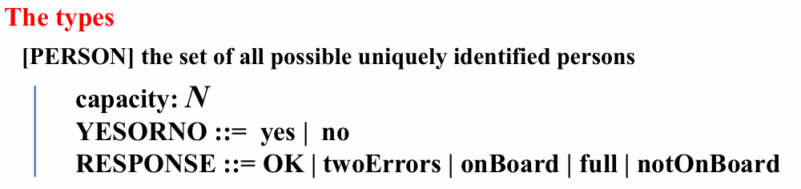
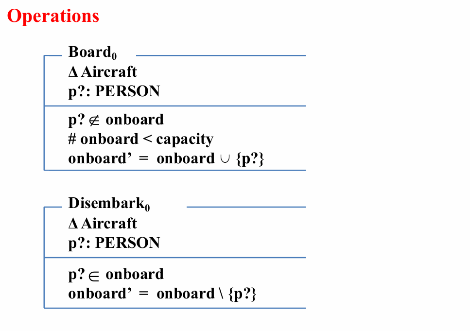

Schema（模式）
Schemas
Schema：结构化的规格说明
schema 的图表形式：
- schema 名称、声明、谓词
schema 的文字形式：
- SchemaName == [ Declarations | Predicate ]
- == 即“代表”
声明和谓词：
- 每行声明被视为以分号结束，若干行构成一个序列
- 若干行谓词被视为以运算符连接
匿名模式：
- 没有名称
不含谓词部分的模式：
- 只声明新变量，不施加约束谓词
局部变量：
- 模式里声明的变量，在其他模式里引用时需要明确包含定义的模式
全局变量：
- 在规格说明始终可以引用，以公理定义声明
- 值不能被规格说明运算改变
全局变量的公理定义：
Schema Calculus
模式推演
模式推演：
- 模式可以作为单元，被不同的类似逻辑运算符的运算符操作。
模式运算符:
Decoration
修饰
-
S 的修饰：S'，其中所有变量都变成对应的 '（a——a'）
-
表示一个模式在执行了某些操作后的值
- 写法：
Inclusion
-
包含 Inclusion
-
一个模式的声明可以包含另一个模式，被包含的模式的声明合并过来、谓词 conjoin 一起
- 写法：
表示
Conjunction
-
合取 Conjunction
-
两个模式 and，得到一个新模式，其声明是原来两个模式的合并（merge）、谓词是原来两个模式的与（\(\wedge\)，conjoin）
Disjunction
-
析取 Disjunction
-
两个模式 or，得到一个新模式，其声明是原来两个模式的合并（merge）、谓词是原来两个模式的或（\(\vee\)，disjoin）
Delta convention
-
或（\(\vee\)，disjoin）
-
\(\Delta\) Delta convention
-
表示模式的改变：
Xi convention
-
\(\Xi\) Xi convention
-
和 \(\Delta\) 一样，只不过每个变量的新值和旧值一样：
Renaming
-
重命名 Renaming
-
语法：newSchemaName == oldSchemaName [newName1/oldName1, newName2/oldName2, ...]
- 举例：T == S [c / b]（把 S 中的 b 替换成 c，得到 T）
Hiding
-
隐藏 Hiding
-
隐藏声明中的变量，让它只存在于谓词的运算符中
- 语法：newSchemaName == oldSchemaName (varName1, varName2, ...)
- 举例：Bhidden == S (b)
Projection
-
投影 Projection
-
隐藏除指定变量之外的变量
- 语法：newSchemaName == oldSchemaName \(\uparrow\) (varName1, varName2, ...)
- 举例：Aprojected == S \(\uparrow\) (a)
Composition
-
合成 Composition
-
语法：S ; T
-
表示执行 S 后执行 T，隐藏了中间变量
-
举例：

其中 column' 代表下一状态的列，line' 代表下一状态的行。
输入和输出变量
输入变量：
- 变量名 + ?
输出变量：
- 变量名 + !
举例：
有输入的模式举例
有输入的模式举例
Overall Structure of a Z Specification Document
Z 规范文档的整体结构
### Sections
- Introduction.
schema的说明
- **The types used in the specification. **
规范中使用的类型
- **The state and its invariant properties. **
状态及其不变属性
- **An operation to set the variables to some initial state. **
将变量设置为某个初始状态的操作
- **Operations and enquiries. **
要求实现的各种操作和查询
- Error handling.
错误处理
- Final versions of operations and enquiries.
操作和查询的最终版本
*举例：Aircraft系统
- types
类型：
- 集合 [PERSON]
- 变量（基本、自由）

- state
状态：
- 声明系统的变量（取子集）
- 约束

- Initialization
初始化：
- 到下一状态
- 空集
- operations
操作：
- 每一种操作对应系统的状态改变 \(\Delta\)（系统变量改变）
- 声明输入 ? 变量
- 变量约束、次态变量操作

- Enquiry operations
查询：
- 每一种查询对应系统的状态改变 \(\Xi\)（系统变量不变）
- 声明输入 ? 输出 ! 变量
- 对应输入变量，赋值给输出变量
- 不同情况用 \(\vee\) 连接，同一情况用 \(\wedge\) 连接

- Dealing with errors
错误处理：
- 发生错误时对应系统的状态改变 \(\Xi\)（系统变量不变）
- 声明输入 ? 输出 ! 变量
-
根据特定输入，列出各种可能出错的情况，对应输出

-
Final version of operations
最终：
- 对于正常情况，定义 OKMessage，其 reply 为 OK
- 操作 == (初始情况 \(\wedge\) OKMessage) \(\vee\) 错误情况